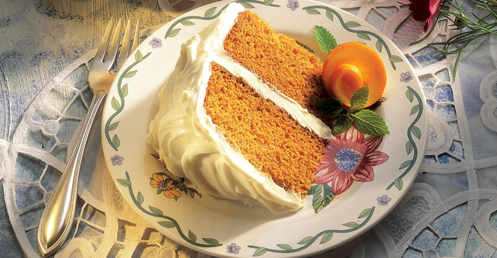

Assignment 05
Tomato Soup Spice Cake
Ingredients
- Boxed Spice Cake Mix
- 1 Can of Campbell's Condensed Tomato Soup
- 1/2 Cup Water
- 2 Eggs
- Storebought or Homemade Cream Cheese Frosting
Direction
- Heat the oven to 350°F. Lightly grease and flour 2 (8 or 9-inch) round cake pans.
- Combine the cake mix, soup, water and eggs in a large bowl and mix according to the package directions. Pour the batter into the pans.
- Bake for 25 minutes or until a toothpick inserted in the center of the cakes comes out clean. Let the cakes cool in the pans on wire racks for 10 minutes. Remove the cakes from the pans and let cool completely.
- Fill and frost with the cream cheese frosting.

You can find the original recipe here!
Contact
tennessee.glenn@umconnect.umt.edu
32 Campus Drive, Missoula, MT 59812